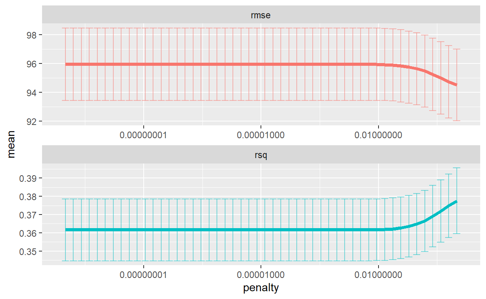
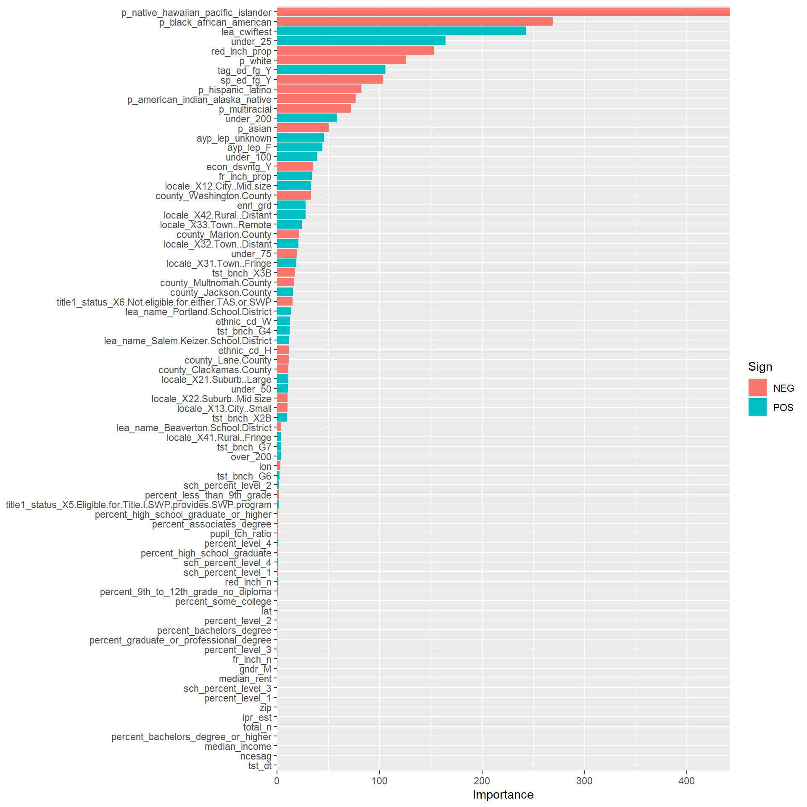

Our aim is to predict the score on statewide testing assessment using other variables in the dataset. Let’s see how linear and lasso regression perform.
Data splitting and resampling is a method to ensure that predictive performance of ML model is unbiased.
We will split our dataset into training and testing set. The training data will be used to fit our model and tune its parameters, whereas the testing data will be used to evaluate our final model’s performance.
We will use initial_split() function from the rsample package which creates a split object. The split object d_split, tells how many observations we have in our training and testing set (trainin set = 75% & testing set = 25%).
set.seed(3000)
# Create split object specifying (75%) and testing (25%)
data_split <- initial_split(data, prop = 3/4)
data_split
<Analysis/Assess/Total>
<1421/473/1894>We will extract the training and testing set from the split object, d_split by using the training() and testing() functions.
# Extract training and testing set
set.seed(3000)
data_train <- training(data_split) # Our training dataset has 1421 observations.
data_test <- testing(data_split) # Our test dataset has 473 observations.At some point, ML models require parameters tuning (adjustment). In order to prepare for tuning, we resample our data. Resampling reduces bias from over-fitting the data. There are several methods to resample the data and the two most effective and frequently used are 10-fold cross validation and bootstrapping. In our project, we’ll resample our data using vfold_cv(). This function outputs k-fold cross-validated versions of our training data, where k = number of time we resample.
# Resample the data with 10-fold cross validation.
set.seed(3000)
cv <- vfold_cv(data_train)Preprocessing is a way of converting data from the raw form to a more usable form for the ML modeling purpose. The pre-processing involves defining roles of variables using role-specifying functions such as all_numeric(), all_predictors() as arguments to pre-processing steps. Pre-processing also involves steps such as imputation (step_medianimpute), rescaling (step_scale), standardizing (step_normalize), PCA (step_pca) and creating dummy variables (step_dummy). A full list of pre-processing can be found here.
We will use recipe() function to indicate our outcome and predictor variables in our recipe. We will use ~. to indicate that we are using all variables to predict the outcome variable score. All recipe takes from the data object at this point is the names and roles of the outcome and predictor variables. We will apply this recipe to specific dataset later. Therefore, when we print summary of object, rec, it shows numbers of predictor variables have been specified. It doen’t actually apply the predictors yet. We will use same receipe throughout this post.
set.seed(3000)
rec <- recipe(score ~ ., data_train) %>%
step_mutate(tst_dt = as.numeric(lubridate::
mdy_hms(tst_dt))) %>% # convert `test date` variable to a date
update_role(contains("id"), ncessch, new_role = "id vars") %>% # declare ID variables
step_nzv(all_predictors(), freq_cut = 0, unique_cut = 0) %>% # remove variables with zero variances
step_novel(all_nominal()) %>% # prepares test data to handle previously unseen factor levels
step_unknown(all_nominal()) %>% # categorizes missing categorical data (NA's) as `unknown`
step_medianimpute(all_numeric(), -all_outcomes(),
-has_role("id vars")) %>% # replaces missing numeric observations with the median
step_dummy(all_nominal(), -has_role("id vars")) %>% # dummy codes categorical variables
step_nzv(all_predictors(), -starts_with("lang_cd"))Extract the pre-processed dataset
To extract the pre-processed dataset, we can prep() the recipe for our datset then bake() the prepped recipe to extract the pre-processed data.
However, in tidymodels we can use workflows() where we don’t need to prep() or bake() the recipe.
prep(rec) #%>%
Data Recipe
Inputs:
role #variables
id vars 8
outcome 1
predictor 79
Training data contained 1421 data points and 1421 incomplete rows.
Operations:
Variable mutation for tst_dt [trained]
Sparse, unbalanced variable filter removed calc_admn_cd, lang_cd [trained]
Novel factor level assignment for gndr, ethnic_cd, ... [trained]
Unknown factor level assignment for gndr, ethnic_cd, ... [trained]
Median Imputation for enrl_grd, tst_dt, lat, lon, ... [trained]
Dummy variables from gndr, ethnic_cd, tst_bnch, ... [trained]
Sparse, unbalanced variable filter removed gndr_new, ... [trained]
# bake(data_train) # We are using workflow so no need to bake.The next step is to specify our ML models, using the parsnip package. To specify the model, there are four primary components: model type, arguments, engine, and mode.
set.seed(3000)
# Specify the model
mod_linear <- linear_reg() %>%
set_engine("lm") %>% # engine for linear regression
set_mode("regression") # regression for continous outcome varaible.
# Workflow
lm_wf <- workflow() %>% # set the workflow
add_recipe(rec) %>% # add recipe
add_model(mod_linear) # add model
# Fit the linear model
mod_linear_fit<- fit_resamples(
mod_linear,
preprocessor = rec,
resamples = cv,
metrics = metric_set(rmse),
control = control_resamples(verbose = TRUE,
save_pred = TRUE))Collect metrics on linear model
set.seed(3000)
mod_linear_fit %>%
collect_metrics() %>%
filter(.metric == "rmse")
# A tibble: 1 x 5
.metric .estimator mean n std_err
<chr> <chr> <dbl> <int> <dbl>
1 rmse standard 96.3 10 2.49
#RMSE = 96.28Our data has multiple variables and some of them are highly correlated. In case like this, linear model usually performs poorly. So let’s try other alternatives such as penalized regression. We will use the same recipe (i.e. rec) for all models in this post. We will use tune_grid() to perform a grid search for the best combination of tuned hyperparameters such penalty.
# Specify the model
set.seed(3000)
# specity lasso with random penalty value and set 1 for mixture.
lasso_mod <- linear_reg(penalty = 0.1, mixture = 1) %>%
set_engine("glmnet")
wf_lasso <- workflow() %>%
add_recipe(rec)
lasso_fit <- wf_lasso %>%
add_model(lasso_mod) %>%
fit(data = data_train)
lasso_fit %>%
pull_workflow_fit() %>%
tidy()
# A tibble: 80 x 3
term estimate penalty
<chr> <dbl> <dbl>
1 (Intercept) -6.64e+3 0.1
2 enrl_grd 2.74e+1 0.1
3 tst_dt 4.49e-6 0.1
4 lat -6.14e-1 0.1
5 lon -3.36e+0 0.1
6 ncesag 0. 0.1
7 zip 1.65e-2 0.1
8 total_n -1.57e-3 0.1
9 fr_lnch_n -8.84e-2 0.1
10 red_lnch_n 4.70e-1 0.1
# ... with 70 more rowsTune Lasso parameters We will use resampling and tuning to figure out right regularization parameter ’penalty`
# Tuning lasso parameters
set.seed(3000)
tune_lasso <- linear_reg(penalty = tune(), mixture = 1) %>%
set_engine("glmnet")
# Tune the lasso grid
lambda_grid <- grid_regular(penalty(), levels = 50)Tune the grid using workflow object
doParallel::registerDoParallel()
set.seed(3000)
lasso_grid <- tune_grid(
wf_lasso %>%
add_model(tune_lasso),
resamples = cv,
grid = lambda_grid
)
# Results
lasso_grid %>%
collect_metrics()
# A tibble: 100 x 7
penalty .metric .estimator mean n std_err .config
<dbl> <chr> <chr> <dbl> <int> <dbl> <fct>
1 1.00e-10 rmse standard 95.9 10 2.50 Model01
2 1.00e-10 rsq standard 0.362 10 0.0169 Model01
3 1.60e-10 rmse standard 95.9 10 2.50 Model02
4 1.60e-10 rsq standard 0.362 10 0.0169 Model02
5 2.56e-10 rmse standard 95.9 10 2.50 Model03
6 2.56e-10 rsq standard 0.362 10 0.0169 Model03
7 4.09e-10 rmse standard 95.9 10 2.50 Model04
8 4.09e-10 rsq standard 0.362 10 0.0169 Model04
9 6.55e-10 rmse standard 95.9 10 2.50 Model05
10 6.55e-10 rsq standard 0.362 10 0.0169 Model05
# ... with 90 more rows
# RMSE = 95.94Visualize the performance Results look fine so let’s visualize the performance with the regularization parameters.
options(scipen = 999)
lasso_grid %>%
collect_metrics() %>%
ggplot(aes(penalty, mean, color = .metric)) +
geom_errorbar(aes(
ymin = mean - std_err,
ymax = mean + std_err
),
alpha = 0.5
) +
geom_line(size = 1.5) +
facet_wrap(~.metric, scales = "free", nrow = 2) +
scale_x_log10() +
theme(legend.position = "none")
For choosing our final parameters, let’s get the lowest RMSE. Once we have the lowest RMSE, we can finalize our workflow by updating with lowest RMSE.
lowest_rmse <- lasso_grid %>%
select_best("rmse")
final_lasso <- finalize_workflow(
wf_lasso %>% add_model(tune_lasso),
lowest_rmse
)
library(vip)
final_lasso %>%
fit(data_train) %>%
pull_workflow_fit() %>%
vi(lambda = lowest_rmse$penalty) %>%
mutate(
Importance = abs(Importance),
Variable = fct_reorder(Variable, Importance)
) %>%
ggplot(aes(x = Importance, y = Variable, fill = Sign)) +
geom_col() +
scale_x_continuous(expand = c(0, 0)) +
labs(y = NULL)
last_fit(
final_lasso,
data_split) %>%
collect_metrics()
# A tibble: 2 x 3
.metric .estimator .estimate
<chr> <chr> <dbl>
1 rmse standard 90.0
2 rsq standard 0.424
# RMSE for full dataset = 89.95